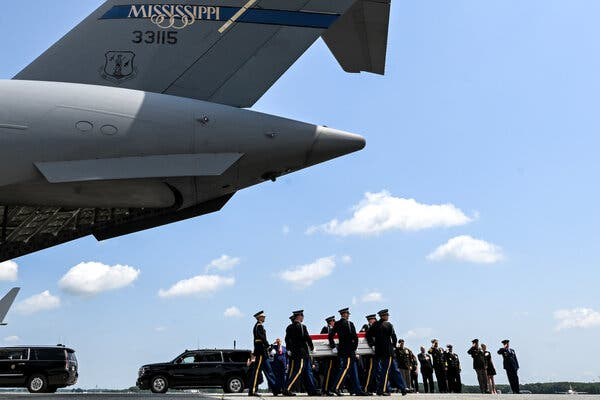
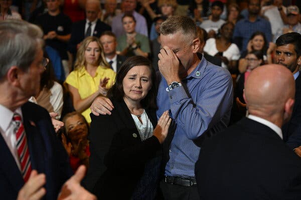
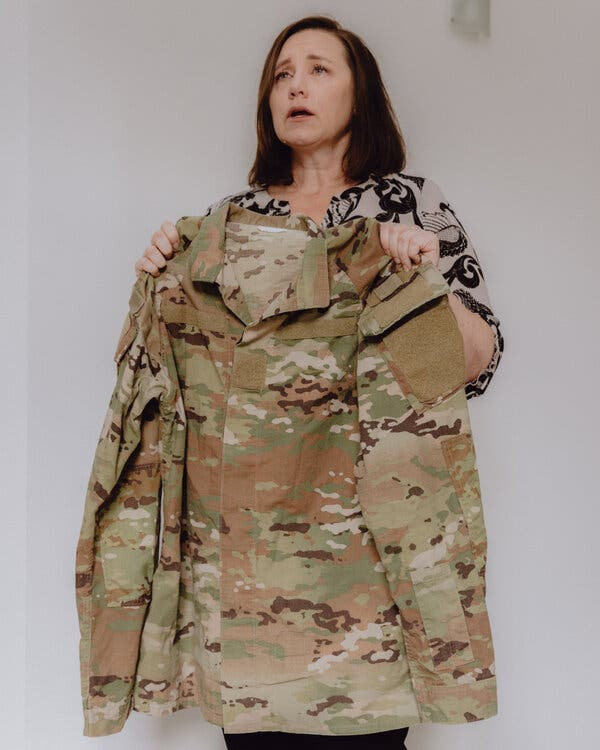
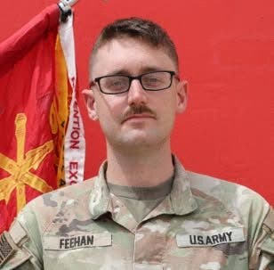
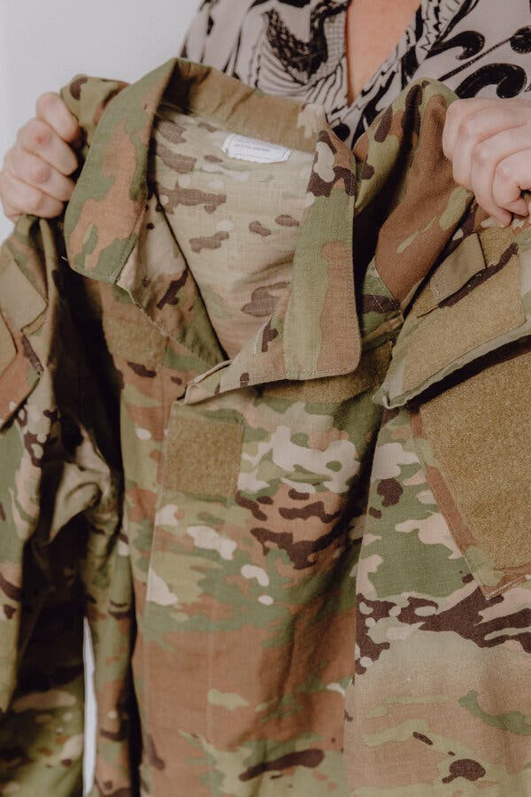
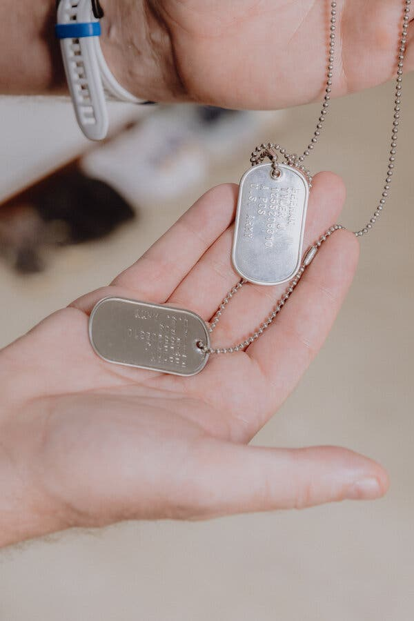

On a windy afternoon in late July, a mother and a father stood on the tarmac at Dover Air Force Base in Delaware, watching as soldiers carried a flag-draped case down the ramp of a cargo plane. Stephen and Shari Feehan’s only child, First Lt. Tyler James Feehan, was inside.
Lieutenant Feehan died on July 18, when Muwaffaq Salti Air Base in Jordan, where he had been deployed for a year as an air defense artillery officer, was hit by a barrage of Iranian missiles and drones. He was 25 years old.
President Trump traveled to Dover to attend the dignified transfer of Lieutenant Feehan and three other soldiers who were killed overseas. During a private meeting with the Feehans, Mr. Trump mentioned that he was headed to a political event in Cobb County, Georgia. Mr. Feehan told the president he had grown up there. The president offered the grieving couple a lift aboard the new Air Force One, a Boeing luxury jet donated by the Qataris.

Inside one of the plane’s cream-and-brown-and-gold private areas, military valets had laid out lunch and put a place card for Lieutenant Feehan on an empty seat. Karoline Leavitt, Mr. Trump’s former press secretary, kept the Feehans company before Mr. Trump came in and sat down. The president had questions about their son: What were his goals? What was he like? How tall was he?
Ms. Feehan said that the Air Force One trip was a surreal and welcome distraction from the anguish that she and her husband were feeling. They did not tell Mr. Trump about the toll the war had taken on their family. She said they did not have to.
“He talked to me as a mother who lost her son,” she said. “He saw the devastation. He witnessed that, and so he knows.”
After arriving in Georgia, the couple followed Mr. Trump from Air Force One to his political rally, in part, Mr. Feehan said, because “we thought Tyler would have loved going to that event.” He said that they had expected to wait in a back room but were brought to the audience, where they were touched by the support of the crowd.
The promise Mr. Trump made to the American people when he was running for a second term was that he would not lead the country to war. Then, in late February, he assured Americans that an excursion into Iran would be over within weeks. Four-and-a-half months after that, enemy missiles lit up the sky over Muwaffaq Salti.
Now Mr. Trump is in a strategic cul-de-sac: “We do intermittent strikes,” he told reporters on Friday, despite concerns that munitions are running low, despite polls showing a majority of Americans are against the war, and despite the risk that more soldiers could die in a conflict that administration officials have refused to call a war.
“A lot of people don’t call it a war. I call it a military conflict because it’s small potatoes for us. It’s not a big thing,” Mr. Trump said. “And this we lost 18 people, and in Vietnam you lost 100,000 people, and in other conflicts you lost tens of thousands of people.” (According to the National Archives, 58,220 U.S. service members died during the Vietnam War.)
The Feehans, who are Republicans, say they do not have an opinion about how Mr. Trump is managing this conflict, this war — whatever anyone wants to call it. They are too consumed by the cost of losing one life.

“We used to watch the news all the time, every day, and we just haven’t even been able to turn it on or watch it, and so we have no idea,” Ms. Feehan said.
But Mr. Feehan, who served multiple tours in Iraq during a 26-year career of active duty in the Army before retiring as a major, said that he understood that presidents changed every four or eight years. They come and go and sometimes they come back again. Mr. Feehan said that his son would have felt the same way: “He didn’t care about the politics of it. He cared about the people that he was working with.”
The surreal distraction of their ride on Air Force One, as welcome as it was, has given way to a new reality. The couple goes on long walks in Vicenza, Italy, where they had moved so that Mr. Feehan, 48, could continue civilian work for the Army. And they have stayed in close touch with Lieutenant Feehan’s fiancée, Claire Fletcher, whom he was supposed to marry right after returning from an extended deployment to Jordan. Ms. Fletcher, who shared a home with Lieutenant Feehan in North Carolina near Fort Bragg, where he was stationed, is currently visiting them in Italy.

“He was supposed to be done,” Mr. Feehan said, adding that his son’s deployment had been extended because the Army’s Air Defense Artillery Branch had overextended personnel across the theater.
Two other soldiers were killed during the attack that killed Lieutenant Feehan: Pvt. Isabella Gonzales, a 19-year-old from Texas; and Sgt. Angel S. Rampersad, 28, from New York. At the dignified transfer in Dover, the body of Sgt. Michael Emmanuel Swinton, 30, who was killed while disposing of an Iranian drone in Iraq, was also returned to his family.
The Pentagon has so far shared limited information about the attack in Jordan, and the Feehans say they are still waiting for the results of an investigation that could tell them more about how their son died. Maj. Travis Shaw, an Army spokesman, said that the matter was still under investigation.
Some soldiers posted video footage of the attack, offering a chaotic, keyhole view into what happened that night. The Pentagon has threatened to take phones away from soldiers, warning that the Iranians could use the footage to plan future assaults.

The U.S. military recorded 14 casualties during Operation Epic Fury, which the Pentagon said concluded in May. The Pentagon has created another list to include four additional deaths into a category it calls Overseas Operations, which includes the service members who died in Jordan and Iraq, including Lieutenant Feehan.
The number of injuries is much higher, currently recorded at 417 for those serving in Operation Epic Fury and more than 375 serving out the Overseas Operations that have followed. The military has at times been slow to disclose the extent of the injuries, in part because U.S. Central Command is not required to release information about injured service members, especially when they quickly return to duty.
Fallen soldiers always become part of a nameless larger number to illustrate a conflict’s toll. But to his loved ones, Lieutenant Feehan was an ambitious kid who, like his father, believed in the promise of military service as a way to see the world, get educated and protect a country he loved.
He had collected two master’s degrees and was applying to law school. He spent his spare time investing in the stock market, researching finances and prodding soldiers in his platoon to pursue higher education, because the military gives back to those who serve. “You’re gonna be in it,” he would tell his soldiers about enrolling in college. “‘That’s one of the benefits.’”
Mr. Feehan referred to his son as a “mini me” who was interested in finance and adventure. They engaged in playful competition with each other, comparing lists of countries they had visited. He and Lieutenant Feehan had planned to climb Mount Kilimanjaro, continuing a tradition of taking on some of the world’s highest mountains together, from the Andes in South America to the southern base camp of Mount Everest in Nepal. They measured their heights against each other. In family photos, Lieutenant Feehan, who was 6 foot 4 inches tall, would always stand on his tiptoes to just slightly best his father, who stands an inch taller.
Ms. Feehan described her son as a “natural-born leader” who was passionate about the goals he set for himself.
“He was a go-getter,” she said. “He loved life.”
The Feehans say they took their son all over the world — to 40 countries — because they wanted him to understand that not all countries are like the United States, a land they believe is one of opportunity. He was raised to understand that American democratic liberties had come at a great cost, and that military service was a way to protect those freedoms.
Is the price they have paid to ensure those freedoms worth it?
“I think on the whole, I would say yes, but it’s a terribly high cost,” Ms. Feehan, 49, said. “And I know there are so many other families who’ve experienced that high cost that nobody should have to experience. But we love our country, and love our military.”
Her voice was thick and breaking as she spoke: “But it’s a really high cost.”


Now they are focused on ensuring that their son has a legacy. The Feehans are dedicating their time to establishing a foundation in his memory that would help soldiers gain access to higher education, and are raising money for that program. And they are preparing to travel to Georgia next week for a rededication ceremony at the The Global War on Terrorism Memorial, where officials have added Lieutenant Feehan’s name.
A memorial service will later be held at Fort Bragg. Mr. Feehan said that the family quickly received military benefits owed to them after Lieutenant Feehan’s death.
They want to return home soon to Cobb County, to help take care of Lieutenant Feehan’s grandmother. His grandfather was ailing during the attack in Jordan, and passed away just days after his grandson did. As Lieutenant Feehan's grandfather was moved into hospice, the family kept the televisions turned off so he would not know what had happened to his grandson. If they move home, Mr. Feehan said, “we’ll be able to visit Tyler and my dad all the time.”
In mid-July, during the last phone conversation Mr. Feehan would have with his son, a proud Lieutenant Feehan said he was hoping to get members of his team some recognition for blasting 10 Iranian missiles and drones out of the sky a week earlier. He was also anxious about whether his law school applications would be enough to get him into a top school. He was hoping for Vanderbilt.
In death, Lieutenant Feehan will receive the Bronze Star, the Purple Heart and the Combat Action Badge. He received a posthumous promotion to captain this week.
The president has also written him a letter of recommendation to law school. Mr. Feehan is proud that Mr. Trump, as well as Gov. Brian Kemp of Georgia and Derek Schiller, the president of the Atlanta Braves, have written posthumous letters for his son.
“He was trying to figure out his letters of recommendation,” Mr. Feehan said, “and now I have them from some of the most powerful people in the world for him.”